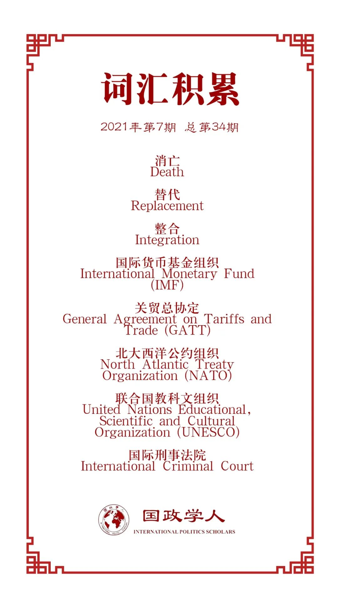

收录于合集

作品简介
【作者】 Maria Josepha Debre, 波茨坦大学国际组织讲席讲师；
Hylke Dijkstra，马斯特里赫特大学政治科学副教授。
【编译】 胡瑞琨（国政学人编译员，布里斯托大学政治学博士研究生）
【校对】 杨稚珉
【审核】 房宇馨
【排版】 黄晨蕊
【美编 】李九阳
【来源】 Debre, M. J. and Dijkstra, H. (2021) ‘Institutional design for a post-liberal order: why some international organizations live longer than others’, European Journal of International Relations , 27(1), pp. 311–339. doi: 10.1177/1354066120962183.
期刊简介
《欧洲国际关系杂志》（ European Journal of International Relations ，即EJIR）是欧洲政治研究联盟国际关系常设小组（the Standing Group on International Relations of the European Consortium for Political Research, SGIR）的同行评审旗舰期刊, 由SGIR和欧洲国际研究协会组成的联合委员会共同管理。根据Journal Citation Reports显示，2019年该期刊的影响因子为3.474。
Maria Josepha Debre
Hylke Dijkstra
**** 为什么有些国际组织更“长寿”？
Institutional design for
a post-liberal order:
why some international organizations live longer
than others
内容提要
伴随着对自由国际秩序消亡话题的热议，许多国际组织确实正在面临压力。本文认为，在理论上制度特征有助于解释为什么有些国际组织能够在其他组织失败的情况下经受住外部压力。通过对150个政府间国际组织（1815-2014）的存续分析情况检验，本文发现解释国际组织消亡的唯一重要变量是秘书处的规模，即拥有庞大官僚机构的组织更善于应对外部压力。此外，成员国之间偏好出现分歧的和那些制度化程度较低的国际组织更有可能被继任组织所取代。本文同时发现，条约中包含的灵活性制度条款其目的虽然是应对外部冲击，然而却对组织的生存没有影响。本文还发现系统性国际因素和国内因素并不能解释国际组织的失败。最后，本文得出结论，由于具有官僚机构的国际组织大量存在，讨论自由主义国际秩序的消亡还为时尚早。
文章导读
01
引文
后自由主义国际秩序的到来成为热议话题。国际组织的失败也并不是一个新现象，自1815年以来创建的国际组织中至少有39%已经不复存在。本文致力于回答 为什么有些国际组织能够在其他组织失败的情况下幸存下来 ，从而为有关国际组织衰落和失败的知识做出贡献。本文将消亡、替代和整合区分为三种不同类型的失败，并认为 制度设计 对于理解国际组织能否经受住外部压力至关重要。制度设计的两个特征可能与组织的存续相关：具有内在灵活性的组织环境适应能力强；制度化程度更高的组织更难被取代，而官僚机构较多的组织能更善于抵御外部压力。
为了验证这一制度论点，本文利用了从战争相关资料库政府间国际组织 (COW IGO) 数据集 v3.0中抽取的150个国际组织（1815-2014年）随机分层样本进行存续分析。对于每一个样本，本文都对制度设计指标进行了编码，从而提供了关于制度灵活性和组织官僚规模的新数据。此外，作者重新编码了因变量，更好地区分了作为国际组织失败的三种不同情况：消亡、替代和整合。同时，作者将本研究的制度理论与对国际组织消亡的其他解释进行对比，这些解释更强调外部因素，例如成员国之间的战争、权力不对称、经济危机和国内成员国政治。
研究结果出人意料。 解释国际组织失败的最重要的变量是秘书处工作人员的规模。 这与目前在自由国际秩序消亡的辩论中占主导地位的现实主义路径相反。相比之下，成员国之间的不同偏好和制度化程度可以解释国际组织的结构性替代。除了成员国偏好对替代的影响外，其他外部因素对消亡或替代的结果都不重要。因此， 如果要理解后自由主义国际秩序中的全球治理，那么应该更多地关注官僚和制度理论，而不是将消亡原因归于国际组织以外的系统性国际关系方法的研究。 另外，本文虽然发现秘书处人员规模这一重要论据，但没有发现支持关于机构灵活性的假设的依据。因为灵活性条款，如退出程序、修改条款等，往往在经过艰苦谈判后最终纳入条约，其目的正是为了应对外部冲击和不确定性。
本文首先确定了导致国际组织压力的外部因素，然后提出了关于制度灵活性、制度化和官僚规模的假设，以解释国际组织如何以不同方式应对这些外部压力。此后，本文讨论了关键变量的研究设计、操作和测量以及统计模型，同时讨论了主要发现以及其如何影响对国际组织以及后自由秩序的理解。
02
制度理论：为何更灵活、规模更大的国际组织更“长寿”？
本文认为国际组织的制度设计会影响其寿命。国际组织会不断受到外部压力，如战争爆发、经济危机、国际议程变化、成员国国内势力的反对等。然而，由于组织方式不同，这些压力不太可能以完全相同的方式影响所有组织。基于制度理论， 本文提出以下假设 (1) 具有内在灵活性的国际组织不太可能失败，因为它们可以适应不断变化的环境；(2a) 由于成本问题，制度化的国际组织不太可能被替代和整合；(2b) 由于组织工作人员可以成为存续的积极推动者，因此拥有较大秘书处的国际组织不太可能消亡。
无论是现实主义观点下的国际组织利益工具观点和世界权力分布因素，还是自由制度主义对国际组织的功能性评价，还是成员国国内政体差异的影响，都说明了外部压力可以为国际组织消亡提供重要解释。但本文更进一步认为， 应通过制度的重要性解释为什么一些国际组织更有能力应对外部压力 。因此，本文试图从理论上和经验上确定制度特征与国际组织消亡之间的明显关系。面对外部压力，国际组织基本上有两种应对方式。它们可以适应外部压力，努力适应不断变化的国际环境，也可以抵抗或忽略外部压力。这种能力取决于其内部机构。本文假设更灵活的国际组织、更加制度化的以及拥有更大官僚机构的国际组织会存续更久，因为它们的制度特征使它们能够应对外部压力。
内在的灵活性是制度设计的一个重要方面，它使国际组织能够面对意外的情况或冲击，或者面对来自国内联盟或国家集群的新需求，从而对合作的稳健性起重要作用。 国际组织中的制度灵活性有两种形式：条约中包含的适应、解释和变革的灵活性和与决策相关的灵活性。国际组织应对外部压力的能力应随着其条约和决策程序的制度灵活性而提高。如果国际组织具有形式上的灵活性，则成员国不一定要在外部压力的情况下终止组织。通过内在的灵活性，国际组织可以改变它们的任务并采用不同的输出。灵活性还允许对国际组织进行实质性转换。因此，本文提出假设：
H1 更灵活的国际组织不太可能失败（死亡、被替代或整合），因为它们有能力适应不断变化的外部环境。
除了灵活外，组织的制度还具有超越当今政治事件的永久性。对于许多国际组织，成员国已经为建立它们进行了大量投资。事实上，由于有限理性导致高交易成本，制度创建的成本特别高。 制度建设的高成本有助于现有政权的存续。 对于制度化程度高的国际组织而言，这种不确定性和替代成本逻辑似乎特别重要。如果成员国已经建立了具有一定程度独立权力的精密机构，它们就不太可能放弃它。因此，本文提出：
H2a 更制度化的国际组织不太可能被替代或整合，因为成员国在创建新组织时面临更高的成本。
比成员国的组织替代成本更进一步，国际组织也可能拥有自己的机构。尤其是其秘书处能够抵抗和抵御外部压力。 国际组织官僚机构的规模及其行政能力对于解释组织存续的机会尤为重要。 不同的秘书处的职能和能力存在显着差异。大多数国际组织只有相对较小的秘书处，负责执行诸如准备会议、提供翻译和法律建议以及处理外部沟通等任务。拥有较大秘书处的国际组织也积累了政策专业知识。为了支持政策的制定和实施，成员国已将重要的能力和资源委派给了几个秘书处，包括欧盟委员会、国际货币基金组织和北约国际工作人员。这不仅可能导致成员国难以应对的信息不对称，而且还会导致秘书处方面的独立政策偏好和“企业身份”。秘书处工作人员通常密切参与替代国际组织的建立。在组织扩张的情况下甚至只要保证秘书处人员不失去工作，他们就实际上可能会从中受益。此外，虽然秘书处工作人员可能会珍惜他们的自主权，但整合可能同样会在更大的 国际组织中产生职业机会。因此，本文最终提出仅涉及消亡作为组织失败结果的 假设：
H2b 拥有较大官僚机构的国际组织不太可能死亡，因为秘书处工作人员可能成为确保国际组织存续的积极因素。
03
研究设计及结果讨论
在因变量上，国际组织的消亡本质上是一个二元概念，即死与活，它定义了国际组织何时停止存续。存续的状态可以被理解为 至少有三个成员国；至少每10年举行一次全体会议；有秘书处和相应地址的机构。 这种理解提供了一个基本状态但可能会有一定的局限性。因此，本文发展使用“国际组织失败”的概念，涵盖了消亡、替换和集成三个不同的状态。当一国际组织的运营被转移到具有类似授权、成员资格或总部位置的新机构时，国际组织即被替代。另一方面，当一国际组织的运营转移到现有机构并成为另一个国际组织内的子机构时，国际组织即被整合。 当一组织不再满足存续标准并且也没有被替代或整合到其他组织中时，国际组织即消亡。
随后本文将自变量进行定义与操作化，本文首先将灵活性理解为一种正式的制度设计特征，使用了三个变量衡量创始条约在多大程度上提供了国际组织的适应性、解释性和变革性能力。其次，本文根据国际组织内多数投票设置情况来衡量决策的灵活性。另外，本文根据成员国对国际组织的投资来反映组织的制度化状况，用组织员工数量来衡量其官僚规模。同时，本文控制了对国际组织造成外部压力的因素，包括成员国之间的战争冲突、实力分布、同领域机制竞争、成员国国内政治因素、成员国偏好、组织是否为特殊议题组织及成员国数量。
本文通过COX比例风险模型进行分析，得出了以下结果： 支持秘书处工作人员规模对解释死亡的重要性（H2b），而制度灵活性措施（H1）以及外部压力并不显着。更制度化的国际组织不太可能被替代（H2a）。
本文对结果展开讨论。研究发现拥有大型秘书处（超过50名员工）的国际组织失败的可能性要小得多。具有较大官僚机构的国际组织如何防止失败有几个逻辑。它们并不总是适用于所有案例，同时它们也不是相互排斥的。首先， 成员国可能会犹豫 是否解散官僚机构庞大的国际组织。以北约为例，尽管北约的使命在冷战结束后基本完成，但北约坚持下来，也是因为在不确定的未来中主要成员国不愿意放弃覆盖如此广泛的机构。其次，秘书处工作人员可以 降低交易成本 ，从而改善成员国之间的合作。国际谈判的复杂性往往会导致僵局。秘书处官员在面临困难的外部压力时帮助成员国找到平衡点，将有利于该组织的存续。第三，较大的官僚机构可以更好地 帮助国际组织适应 不断变化的环境，并通过在危机时刻抓住变革机会来摆脱僵局。虽然国际货币基金组织（IMF）在很大程度上被认为是一个在2008年金融危机之前已经失去效用的机构，但基金组织的工作人员在重塑其作为全球资本流动的管理者和富裕经济体的贷款者方面发挥了关键作用。同样，全球卫生治理也因多个参与者之间日益分化而受到损害，这往往阻碍了世卫组织（WHO）的有效治理。然而，世卫组织秘书处在2002年“非典”期间成为关键参与者，此后将其紧急权力正式制度化。最后，较大官僚机构能够更好地 抵御成员国的挑战 。例如，教科文组织在2011年后失去美国捐款后面临重大的预算危机。在抵御外部挑战方面，秘书处职员很少孤军奋战。较大的秘书处可以与成员国进行战略勾结或使用非政府组织和公私合作伙伴关系等中介机构来推动其治理目标并确保持续运行。
除了支持假设H2b之外，由于成员国之间偏好差异显著，本文还特别有助于表明成员国之间的关系是替代形式的重要预测因素。如上所述，消亡和替代确实似乎是非常不同的失败事件。 与消亡相反，替代可能意味着成员国之间的危机也可能导致国际组织的潜在发展。 在偏好出现分歧的情况下，成员国实际上可能需要重新谈判条约，以弥补以前的失败，并在新的制度框架下重新开始合作。例如，当关贸总协定（GATT）在一些有争议的政策领域不再能够充分规范成员国之间的贸易自由化时，重新谈判之后它被具有扩大和调整授权的世贸组织（WTO）所替代。
与预期相反，本文发现，除了多数投票设置因素的短暂影响外， 国际组织条约中包含的内在制度灵活性对其存续没有影响 。虽然灵活性对于大多数文献都关注的双边条约很重要，但作为组织实体的国际组织显然有所不同。仔细观察，本文还发现制度灵活性的变化相对较小，特别是在退出和修订条款方面。国际组织的许多条约遵循相同的模板，特别是在1969年的维也纳公约之后。大约仅有25%的国际组织没有明确包含修改条约的可能性或不规范退出程序。这可能意味着，与其他国际机制相比，国际组织是在成员国做出更长期、更不灵活的承诺的情况下建立的。
04
结论
本文研究表明，拥有大量职员的国际组织能够更好地避免失败。相比之下，制度化程度较低且面临不同偏好的国际组织更有可能被替代以弥补以前的失败。然而，本文没有发现支持诸如修改或撤回条款和授权精确性等灵活性条款可以解释国际组织的失败。虽然这些条款经常被纳入条约以使得组织存续，但它们并非关键。最后，系统性国际关系和成员国国内因素解释也没有太大分量。如果成员国面临财政紧缩并可能试图削减在参与的国际组织中投入的预算，该组织似乎不会遭受致命的损失。国际组织也不会从更同质的民主成员中获益。这些发现强调，应该以更细致入微的方式思考国际组织的衰落和失败。
译者评述
本文与译者曾经选取编译的同期文章《是什么杀死了国际组织？》相呼应，更加具体地修正与补充了国际组织消亡理论的内容。译者在上一篇中提到国际组织的消亡，特别是出现替代与整合的情况并不意味着国际组织命运的悲观色彩。本文意识到了并指出了这一点，并通过实证分析着眼于组织内在的因素来考察其“寿命”长短的影响因素。作者选用的COX风险比例模型本是创造用于医学研究来分析变量对患者生存时间的影响的统计工具，在此用分析国际组织的“生命”十分有效且生动形象。
本文发现，组织中具有灵活性的条款并不能够影响其寿命。国内法中修订与落日条款等灵活性条款之所以能获得比较广泛的运用，一个重要的原因是它能较好地处理了法律的稳定性与灵活性的关系，通过一种自动失效的方式敦促成员国与攸关方及时更新有关法律规范，目的是为了在当今社会急剧变化的时代里，及时淘汰一些不合适宜或不必要的规范[1]。国际法中同样借鉴了这一结构。作者指出了国际组织中制度框架构建中这些灵活性条款的普遍性，然而其并不能对于组织寿命产生明显的作用。这或许是因为国际社会与国内社会的本质结构差异、稳定程度与形势变化情况所导致的。在更加不稳定易于风云突变的无政府国际社会中，法律形式本身产生的作用与约束能力与其他因素比较确实可能比较微弱。本文的核心结论在于国际组织的官僚机构规模和制度是影响国际组织存续时间的重要因素。这一结论也可以作为当前我国重视国际组织在全球治理中的作用并支持为国际组织输送人才政策的一个理论支撑点。
参考文献
[1]侯芳. 初探“落日条款”的中国立法适用[D]. 华东政法大学,2007.
词汇整理

文章观点不代表本平台观点，本平台评译分享的文章均出于专业学习之用, 不以任何盈利为目的，内容主要呈现对原文的介绍，原文内容请通过各高校购买的数据库自行下载。
好好学习，天天“在看”
国政学人
支持学术公益与知识传播
微信扫一扫赞赏作者 __赞赏
已喜欢，对作者说句悄悄话
取消 __
发送给作者
发送
最多40字，当前共字
上一页 1/3 下一页
长按二维码向我转账
支持学术公益与知识传播
受苹果公司新规定影响，微信 iOS 版的赞赏功能被关闭，可通过二维码转账支持公众号。